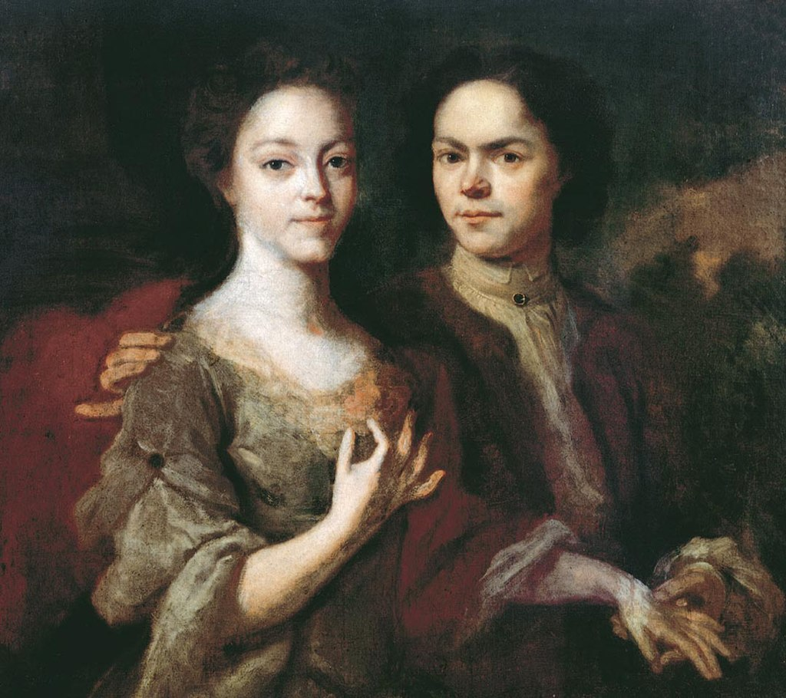
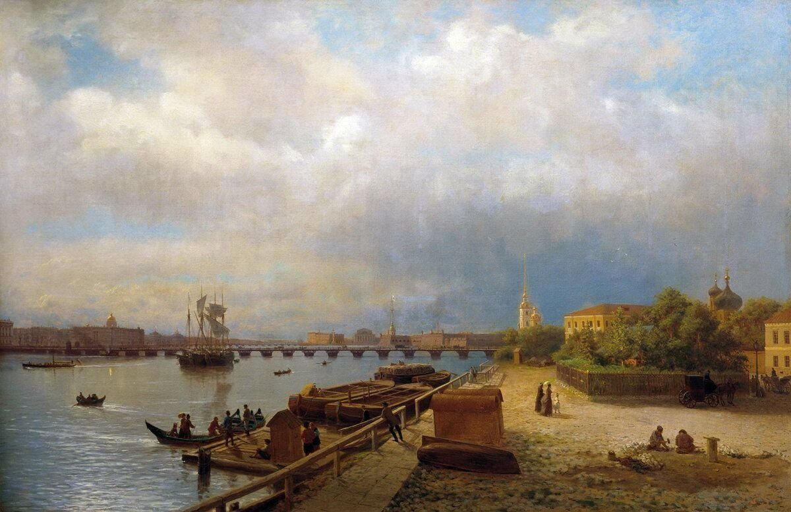

Петр также сильно влиял на культурное и архитектурное наследие России. Строительство Санкт-Петербурга и других городов, а также развитие науки, литературы и искусства, говорят о великом наследии, оставленном развивающейся страной благодаря творческому гению Петра І. На этой странице мы рассмотрим архитектурные, культурные и научные достижения того времени и их влияние на современную Россию.
Строительство Санкт-Петербурга при Петре 1 совпало с Северной войной против Швеции. Очень необычный случай в истории, когда на территории, де-юре до 1721 года принадлежавшей противнику, построили крупный портовый город и перенесли туда столицу к 1714 году. В 1721 году завершилась война со Швецией, и Россию провозгласили империей.
Важно отметить, что строительство продвигалось неспешно и с некоторой долей осторожности. Изначально использовали дерево, поскольку царь не был уверен, смогут ли русские удержать эти территории. После успеха армии Петра под Нарвой стало ясно, что отныне земли Санкт-Петербурга будут принадлежать России, после чего был отдан приказ создать каменные укрепления.
Царь максимально использовал открывшиеся перед ним возможности. Поскольку город необходимо было построить “с нуля”, а потому Пётр смог реализовать свои самые смелые планы, воплотить замысел создания города по европейским образцам и принципам.Конечно, возведение Петербурга продвигалось не стихийно, но царь непрерывно следил за процессом строительства, внося свои поправки и предложения. Как отмечают специалисты, Пётр активно использовал чертежи из европейских изданий, что позволяет заметить в старинной архитектуре Петербурга “голландизмы” и англицизмы”.
Летний дворец Петра I, построенный в 1710–1714 годах, был образцом для строительства домов «зело именитых» особ. Разве что отделка фасада и внутренняя планировка отличала царский дворец от домов его сановников. Двухэтажное каменное здание было построено на голландский манер по проекту Доменико Трезини. Фасады здания выглядят изысканно — их украшают терракотовые барельефы — иллюстрации сражений в Северной войне, выполненные Андреасом Шлютером. Внутренняя планировка дворца отличается простотой — в нем всего четырнадцать небольших комнат и две кухни. Современники находили дворец неподходящим для царской резиденции, один из послов назвал его «жалким домом, нисколько не соразмерным со всем остальным». По его словам, Летний дворец был «до того тесный, что зажиточный дворянин, наверное, не захотел бы поместиться в нем». После смерти Петра во дворце жили как члены императорской семьи, так и царские сановники.
Петропавловский собор, строительство которого началось в 1712 году на месте одноименной деревянной церкви 1703 года, долгое время был самым высоким зданием России. Высота колокольни, с которой и было начато строительство, составляла 122,5 метра. При этом, как гласит легенда, шпиль колокольни Петр распорядился возвести над тем местом, где был похоронен царевич Алексей, «дабы крамола никогда не восстала из земли и не распространилась по Руси» (царевича Алексея, сына Петра I, обвиняли в государственной измене). Петропавловский собор сильно отличается от традиционных русских храмов: это вытянутое в плане здание с очень сдержанными фасадами, которые оформляют только плоские колонны — пилястры и наличники с херувимами. Петропавловский собор стал первым российским храмом, построенным в тенденциях западноевропейской архитектуры.
При Петре I людей разных профессий отправляли учиться за границу, в том числе и художников. Тех, кто получал знания за государственный счет, называли пенсионерами (от слова «пенсион» — содержание на время обучения). Среди первых живописцев, уехавших за границу в 1715 году, были Иван Никитин и Андрей Матвеев. Никитин прошел обучение в Италии и, вернувшись в Россию, работал при царском дворе. Его считают одним из основателей русской портретной школы. Андрей Матвеев учился в Голландии, позже он создал первый в истории русской живописи автопортрет.
За границей русские художники погружались в европейскую культурную среду. Они знакомились с направлениями, которые уже долгое время развивались в искусстве законодательницы мод Франции, национальной живописи Англии, наследнице Ренессанса Италии и Голландии. На манере их письма отражались популярные в Европе стили: маньеризм, барокко, рококо, классицизм. Однако художникам удавалось сохранять черты, присущие русскому искусству. Так, до середины XVIII века даже на полотнах в стиле вычурных барокко и рококо были заметны элементы аскетичной парсуны.
Поток свежих идей хлынул в русскую живопись: художественные техники и приемы колористики, работа с композицией и новые жанры. В книге «История русского искусства» Игорь Грабарь писал: «С уверенностью можно сказать лишь то, что одним из главных факторов, решивших судьбу русской живописи, было появление портрета». Новый жанр был связан с парсунной живописью, которая получила распространение в XVII столетии. Парсуной (от искаженного «персона») условно называли портрет, в котором наряду с традиционными иконописными чертами стали появляться и более реалистичные мотивы. Художники, до этого писавшие иконы, стали обращаться к человеку и его внутреннему миру. Краски становились более яркими, а сюжеты — более светскими. В XVIII столетии — его называли «веком портретов» — появилось множество вариантов этого жанра: роскошный парадный, автопортрет и изображение на одном полотне сразу двоих людей.
 